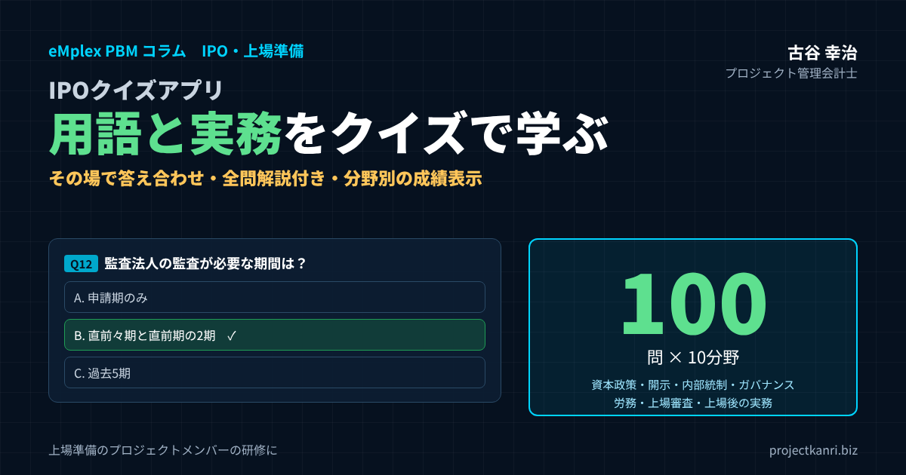

IPOクイズアプリ｜用語と実務をクイズで学ぶ100問―上場準備・資本政策・決算と開示・管理会計・内部統制・ガバナンス・労務・上場審査・上場後の実務まで

IPOの用語と実務を、100問のクイズで学ぶ
このクイズアプリの特徴
- IPOの用語と実務を10分野・100問で確認できる
- 選択肢を選ぶとその場で答え合わせ、一問ずつ実務の解説付き
- 回答数・正解数・正答率と分野別の成績が自動で集計される
- 上場準備のプロジェクトメンバーの研修や理解度の確認に
- プロジェクト型ビジネスで重要な原価計算・収益認識・着地見込みも出題
プロジェクト管理会計士の古谷です。上場の準備をご支援していると、プロジェクトのメンバーの方から、「打ち合わせで出てくる言葉の意味が分からない」「何のためにこの作業をしているのか分からない」という声をよく聞きます。IPOの準備には、会計、法務、労務、証券、ガバナンスと、幅広い分野の専門の用語が登場します。経理や経営企画の担当者でさえ、すべてを知っているわけではありません。
そこで、IPOの準備で押さえておきたい用語と実務を、100問のクイズにまとめました。このページは、そのまま解けるクイズアプリになっています。選択肢を選ぶと、その場で正解かどうかが分かり、解説が表示されます。上の回答状況のバーで、解いた問題の数と正答率を確認できます。
クイズは、IPOの基本と市場、準備体制とスケジュール、資本政策と株式、決算と開示、管理会計と予算統制、内部統制、ガバナンスと機関設計、労務とコンプライアンス、上場審査と公開手続き、上場後の実務とプロジェクト型ビジネスの、10の分野に10問ずつ分かれています。最初から順番に解いても、気になる分野から解いても構いません。
なお、上場の基準や開示の制度は改正されることがあります。本クイズは2026年11月時点の一般的な内容にもとづいています。実際の準備にあたっては、取引所の最新の公表資料と、主幹事証券や監査法人などの専門家の助言を必ず確認してください。
クイズアプリの使い方
| 操作 | 内容 |
|---|---|
| 答える | 選択肢（A〜D）をクリック。正解は緑、不正解は赤で表示 |
| 解説を読む | 「答えと解説を見る」を開く（回答すると自動で開く） |
| 成績を見る | 回答状況のバーと、記事後半の分野別の表で確認 |
| やり直す | 回答状況のバーの「リセット」 |
答えを選んだ問題は、正解なら緑、不正解なら赤で表示され、正解の選択肢も示されます。解説では、その用語の意味だけでなく、実務で何に注意すべきかまで触れています。答えを選ぶ前に解説を読みたい場合は、「答えと解説を見る」を開いてください。
回答の状況は、このブラウザの中にだけ保存されます。途中で閉じても、同じブラウザで開き直せば続きから解けます。最初から解き直したいときは、回答状況のバーにある「リセット」を押してください。
第1章 IPOの基本と市場（Q1〜Q10）
まずは、IPOとは何か、上場する市場にはどのような種類があるのかといった、基本の用語から確認しましょう。上場の目的と目指す市場を決めることが、すべての準備の出発点です。
Q1IPOとは何の略ですか。
答えと解説を見る
正解：A IPOはInitial Public Offeringの略で、未上場の会社が証券取引所に株式を上場し、広く投資家が売買できるようにすることです。新株の発行（公募）や既存株主の売出しを伴うのが一般的です。
Q2東京証券取引所の現在の市場区分（2022年4月〜）として正しい組み合わせはどれですか。
答えと解説を見る
正解：B 東証は2022年4月に市場区分を再編し、プライム市場、スタンダード市場、グロース市場の3つになりました。このほかにプロ投資家向けのTOKYO PRO Marketがあります。
Q3TOKYO PRO Marketの主な投資家として正しいものはどれですか。
答えと解説を見る
正解：B TOKYO PRO Marketはプロ投資家向けの市場です。一般の市場とは制度の枠組みが異なり、上場の要件や開示の内容も異なります。具体的な要件は取引所の資料で確認しましょう。
Q4TOKYO PRO Marketで上場の適格性の調査と上場後の支援を担う機関はどれですか。
答えと解説を見る
正解：B TOKYO PRO Marketでは、取引所の資格を持つJ-Adviserが、上場の適格性の調査と上場後の支援を担います。一般の市場における主幹事証券とは役割の仕組みが異なります。
Q5IPOで新しく株式を発行して資金を調達することを何と呼びますか。
答えと解説を見る
正解：D 新株を発行して投資家に取得してもらうのが公募です。会社に資金が入ります。一方、既存の株主が持っている株式を売るのが売出しで、代金は売った株主に入ります。
Q6IPOの主な目的として一般的でないものはどれですか。
答えと解説を見る
正解：B IPOの目的には、資金調達、知名度や信用力の向上、採用力の強化、株主の出口などがあります。上場しても法人税が免除されることはありません。目的を経営陣で共有することが準備の第一歩です。
Q7上場のデメリットとして適切なものはどれですか。
答えと解説を見る
正解：C 上場すると、定期的な開示、適時開示、監査、内部統制の報告、ガバナンスの維持などの義務とコストが継続的に生じます。上場の意思決定では、こうしたコストも事業計画に織り込みます。
Q8上場後に株主や投資家に会社の情報を提供する活動を何と呼びますか。
答えと解説を見る
正解：D IR（インベスター・リレーションズ）は、投資家や株主に投資判断に役立つ情報を公平・適時に提供する活動です。顧客や社会全般に向けた広報（PR）とは、対象と目的が異なります。
Q9上場した会社が、上場を続けるために満たす必要のある基準を何と呼びますか。
答えと解説を見る
正解：B 上場後も、市場ごとに定められた上場維持基準を満たし続ける必要があります。上場の時点の審査基準とは別のものです。具体的な基準は市場区分ごとに取引所の規則で定められています。
Q10IPOの準備で最初に経営陣が決めるべきこととして最も適切なものはどれですか。
答えと解説を見る
正解：A まず上場の目的と目指す市場を決めます。目的と市場が決まれば、必要な準備の水準、スケジュール、監査を受け始める時期が決まり、準備の優先順位をつけられるようになります。
第2章 準備体制とスケジュール（Q11〜Q20）
IPOの準備は、上場したい時期から逆算して進めます。申請期、直前期、ショートレビュー、主幹事証券など、スケジュールと準備体制に関わる用語です。
Q11上場申請を行う事業年度のことを一般に何と呼びますか。
答えと解説を見る
正解：C 上場申請を行う事業年度を申請期（N期）と呼び、その前年度を直前期（N-1期）、さらに前を直前々期（N-2期）と呼びます。準備のスケジュールはここから逆算します。
Q12一般の市場への上場申請にあたり、監査法人の監査が必要とされる期間として一般的なものはどれですか。
答えと解説を見る
正解：D 一般の市場への上場では、直前々期と直前期の2期分の財務諸表について監査法人の監査を受けている必要があります。そのため、直前々期が始まる前に監査契約を結べる状態にしておくことが準備の起点になります。
Q13監査法人が上場準備会社の課題を洗い出すために行う予備調査を何と呼びますか。
答えと解説を見る
正解：D ショートレビューは、監査法人が会計処理、内部統制、管理体制を調べ、上場に向けた課題を報告する予備調査です。指摘事項の一覧は、IPO準備のチェックリストの中心になります。
Q14主幹事証券会社の主な役割として適切でないものはどれですか。
答えと解説を見る
正解：D 主幹事証券は、スケジュールの策定、資本政策の助言、引受審査、株式の引受と販売などを担います。財務諸表に対する監査意見を表明するのは監査法人の役割です。
Q15上場後に株主名簿の管理などを担う機関はどれですか。
答えと解説を見る
正解：A 株主名簿管理人は、株主名簿の作成・管理、株主総会の招集通知の発送事務、配当金の支払事務などを担います。信託銀行や証券代行会社が務めるのが一般的です。
Q16直前期の位置づけとして最も適切なものはどれですか。
答えと解説を見る
正解：A 直前期は、整えた規程・内部統制・月次決算・予算統制などが実際に運用されていることを示す期間です。直前期に入ってから仕組みを作り始めると、運用実績を示せません。
Q17IPO準備のチェックリストで「完了」の定義として最も適切なものはどれですか。
答えと解説を見る
正解：C IPO準備で問われるのは、仕組みが運用されていることです。規程であれば、案の作成ではなく、承認・周知されて運用が始まった時点を完了とするのが実務的です。
Q18IPO準備の担当者の決め方として最も適切なものはどれですか。
答えと解説を見る
正解：B 部署名だけでは誰が責任を持つのかが曖昧になり、項目が放置されがちです。チェックリストの各項目は、個人名で担当者を決めて管理しましょう。
Q19監査対象となる最初の期について、監査契約前に点検しておくべきものはどれですか。
答えと解説を見る
正解：B 直前々期の期首の在庫・仕掛品・売掛金・未払費用などの残高に根拠がないと、監査に支障が出ます。監査契約の前に期首残高の根拠を点検しておくことが大切です。
Q20内部監査の担当者を置く時期として望ましいものはどれですか。
答えと解説を見る
正解：C 内部監査は、内部統制や規程の運用状況を確認する機能です。直前期に運用実績を示すためにも、準備の早い段階から担当者を置き、内部監査を開始しておくのが望ましいです。
第3章 資本政策と株式（Q21〜Q30）
資本政策は、一度実行するとやり直しがほとんどできない、IPOの中でも特に慎重さが求められる領域です。公募と売出し、ロックアップなど、株式に関わる用語を確認します。
Q21資本政策の特徴として最も適切なものはどれですか。
答えと解説を見る
正解：C 資本政策は株主構成や株式数、資金調達の計画を設計するもので、一度実行するとやり直しがほとんどできません。早い段階から主幹事証券や税理士などと相談して慎重に検討します。
Q22資本政策で特に注意すべき点として最も適切なものはどれですか。
答えと解説を見る
正解：C 上場前の資金調達で外部投資家に多くの株式を渡すと、経営陣の持株比率が下がり、経営の安定性が損なわれるおそれがあります。上場後の希薄化も見込んで株主構成を描きます。
Q23ストックオプションの法的な形式として一般的なものはどれですか。
答えと解説を見る
正解：D ストックオプションは、あらかじめ決めた価格で株式を取得できる権利で、会社法上は新株予約権として発行されます。付与対象・数量・行使条件・税制上の扱いを慎重に設計します。
Q24IPOで既存株主が保有株式を投資家に売却することを何と呼びますか。
答えと解説を見る
正解：B 既存株主が保有する株式を投資家に売るのが売出しです。売却代金は会社ではなく売った株主に入ります。公募と売出しの組み合わせは資本政策の中で決めます。
Q25上場後の一定期間、既存株主などが株式を売却しないことを約束することを何と呼びますか。
答えと解説を見る
正解：D ロックアップは、上場後の一定期間、大株主や経営陣などが株式を売却しないことを主幹事証券などと約束するものです。上場直後の需給の悪化を防ぐ目的があります。
Q26需要の状況に応じて、主幹事証券が株主から借りた株式を追加で売り出す仕組みを何と呼びますか。
答えと解説を見る
正解：B オーバーアロットメントは、需要の状況に応じて主幹事証券が株主から借りた株式を当初の予定数を超えて売り出す仕組みです。借りた株式の返却にはグリーンシューオプションなどが使われます。
Q27上場前に株式の移動（譲渡など）があった場合の扱いとして適切なものはどれですか。
答えと解説を見る
正解：A 上場前の一定期間の株式の移動は、上場申請の書類で開示が求められます。誰が、いつ、どの価格で株式を移動したのかを説明できるよう、記録と根拠を整えておきます。
Q28上場前の第三者割当で株式を取得した者について、一般にどのような規制がありますか。
答えと解説を見る
正解：D 上場前の一定期間に第三者割当などで株式を取得した者には、取引所の規則により、一定期間継続して保有することの確約が求められます。詳細は取引所の規則と主幹事証券に確認しましょう。
Q29名義株とは何ですか。
答えと解説を見る
正解：C 名義株は、実際の出資者と名簿上の株主が異なる株式です。上場準備では、株主の実態を明確にするため、名義株や所在不明の株主などの問題を早めに解消しておきます。
Q30資本政策表を作るときに一緒に見通しておくべきものとして適切でないものはどれですか。
答えと解説を見る
正解：D 資本政策表では、資金調達の時期と金額、株価の想定、ストックオプションの行使による株式数の増加などを一つの表で見通し、上場時と上場後の株主構成を検討します。
第4章 決算・開示（Q31〜Q40）
上場すると、法令と取引所の規則にもとづく開示の義務が生じます。法定開示と適時開示の違い、決算短信や有価証券報告書の期限など、開示の基本を押さえましょう。
Q31法令に基づく開示（法定開示）の代表的な書類はどれですか。
答えと解説を見る
正解：B 有価証券報告書は金融商品取引法に基づく法定開示書類で、EDINETなどを通じて開示されます。決算短信は証券取引所の規則に基づく適時開示です。
Q32証券取引所の規則に基づき、重要な会社情報を速やかに開示する制度を何と呼びますか。
答えと解説を見る
正解：A 適時開示は、証券取引所の規則に基づき上場企業に義務づけられた開示で、重要な会社情報が生じたときに速やかに開示します。TDnetを通じて行われます。
Q33適時開示を行うシステムの名称はどれですか。
答えと解説を見る
正解：A TDnet（適時開示情報伝達システム）は、上場企業が適時開示を行うためのシステムです。法定開示書類はEDINETで開示されます。
Q342024年4月施行の金融商品取引法の改正で、上場企業の第1・第3四半期の開示はどうなりましたか。
答えと解説を見る
正解：C 2024年4月施行の改正で、第1・第3四半期の四半期報告書は廃止され、取引所規則に基づく四半期決算短信に一本化されました。第2四半期は半期報告書の提出が求められます。
Q35有価証券報告書の提出期限として正しいものはどれですか。
答えと解説を見る
正解：B 有価証券報告書は、原則として事業年度経過後3か月以内に提出する必要があります。3月決算の会社が6月に株主総会と有価証券報告書の提出を行うのはこのためです。
Q36決算短信の開示時期について、東証が適当としている目安はどれですか。
答えと解説を見る
正解：A 東証は、決算の内容が定まったら直ちに開示することを求め、決算期末後45日以内の開示を適当としています（30日以内はより望ましいとされています）。そのためには月次決算の早期化が欠かせません。
Q37業績予想の修正について、適時開示が必要となる基準として正しいものはどれですか。
答えと解説を見る
正解：D 東証の規則では、直近の予想に比べて売上高が10%以上、営業利益・経常利益・純利益が30%以上変動する見込みとなった場合などに、業績予想の修正の開示が必要とされています。
Q38TDnetの「PR情報」の位置づけとして正しいものはどれですか。
答えと解説を見る
正解：A TDnetでは適時開示情報とは別に「PR情報」を開示でき、日本取引所グループは、PR情報を投資判断上有用な会社情報以外の会社情報と位置づけています。
Q392025年4月以降、プライム市場の上場内国会社に義務づけられたものはどれですか。
答えと解説を見る
正解：A 2025年4月以降、プライム市場の上場内国会社は、決算情報と適時開示情報について、日本語と同時に英語による開示を行うことが義務づけられています。
Q40月次決算の締め日数について正しいものはどれですか。
答えと解説を見る
正解：B 月次決算の日数に法令の定めはありません。上場後の開示期限を考え、翌月10営業日程度、準備が進んだ段階では5営業日程度を目標にする会社が多いです。
第5章 管理会計・予算統制（Q41〜Q50）
上場審査では、事業計画の合理性と、それを達成するための予算統制の仕組みが問われます。プロジェクト型ビジネスで特に重要な、労務費の原価計算や仕掛品の考え方も含めて確認します。
Q41上場審査で事業計画について特に問われることはどれですか。
答えと解説を見る
正解：D 事業計画で問われるのは数字の大きさではなく根拠です。売上が受注残や案件の状況とどうつながっているか、費用が人員計画とどうつながっているかを説明できることが求められます。
Q42予算と実績を比べ、差異の原因を分析して対策を打つ仕組みを何と呼びますか。
答えと解説を見る
正解：C 予算統制（予実管理）は、予算と実績を毎月比べ、差異の原因を分析し、対策を打つ仕組みです。上場準備では、この仕組みが運用されていることが求められます。
Q43年度の着地の見込みを毎月更新して経営判断に生かす考え方として最も近いものはどれですか。
答えと解説を見る
正解：C 過去の実績の報告だけでなく、年度の着地見込みを毎月更新し、目標との差を埋める打ち手を考えるのがフォーキャスト経営です。業績予想の修正を適切に判断する土台にもなります。
Q44プロジェクト型ビジネスで、社員の労務費をプロジェクト原価にする基本的な方法はどれですか。
答えと解説を見る
正解：C 社員がどのプロジェクトに何時間を使ったかをタイムシートで記録し、工数に時間単価を掛けて労務費を原価に配分します。工数の記録が月末にまとめて入力される状態では、原価の正確性が疑われます。
Q45管理会計の数字について、上場準備で特に求められることはどれですか。
答えと解説を見る
正解：D プロジェクト別や事業別の採算の合計が、決算の数字と一致していなければ管理会計の数字は信頼されません。毎月の整合確認を月次決算の手順に組み込みます。
Q46顧客別損益で、取引継続の判断の中心に据えるべき利益として最も適切なものはどれですか。
答えと解説を見る
正解：B 間接費を配賦した後の赤字だけで撤退を判断すると、固定費が残り会社全体の利益がかえって減ることがあります。取引継続の判断は、固定費の回収への貢献を示す貢献利益を中心に見ます。
Q47期末時点で完成していないプロジェクトの原価は、通常どのように扱いますか。
答えと解説を見る
正解：D 未完成のプロジェクトに溜まった原価は、仕掛品として資産に計上します。回収できない見込みの原価は損失として処理する必要があり、監査で必ず確認されます。
Q48将来の受注契約から損失が見込まれる場合に計上を検討する引当金はどれですか。
答えと解説を見る
正解：C 受注した契約の総原価が収益を上回る見込みとなった場合、受注損失引当金（工事では工事損失引当金）の計上を検討します。赤字プロジェクトを適時に把握する仕組みが前提です。
Q49「収益認識に関する会計基準」の5つのステップの最初のステップはどれですか。
答えと解説を見る
正解：A 5つのステップは、①顧客との契約の識別、②履行義務の識別、③取引価格の算定、④取引価格の履行義務への配分、⑤履行義務の充足時（または充足するにつれて）の収益認識です。
Q50申請期の業績が事業計画を大きく下回った場合に起こり得ることとして適切なものはどれですか。
答えと解説を見る
正解：C 申請期の業績が計画を大きく下回ると、上場スケジュールの見直しにつながることがあります。月次で予実を比較し、着地見込みを更新して、早めに手を打つ仕組みが欠かせません。
第6章 内部統制（Q51〜Q60）
上場企業には、財務報告に係る内部統制の評価と報告が求められます。J-SOX、3点セット、職務の分離など、内部統制の基本の用語です。
Q51J-SOXとは何を指す通称ですか。
答えと解説を見る
正解：A J-SOXは、金融商品取引法に基づく財務報告に係る内部統制の評価・報告の制度の通称です。上場企業は、経営者による評価結果を内部統制報告書として提出します。
Q52業務プロセスの内部統制の文書化で、いわゆる「3点セット」に含まれないものはどれですか。
答えと解説を見る
正解：A 3点セットは、業務記述書、フローチャート、リスクコントロールマトリックス（RCM）です。業務の流れ、リスク、それに対応する統制を明確にします。
Q53内部統制の整備で一般的に分けて考える3つの層として適切でないものはどれですか。
答えと解説を見る
正解：D 内部統制は、全社的な内部統制、決算・財務報告プロセス、業務プロセスの層に分けて整備・評価するのが一般的です。
Q54新規上場会社の内部統制報告書に対する監査法人の監査について正しいものはどれですか。
答えと解説を見る
正解：A 新規上場会社は、一定の要件のもとで上場後3年間、内部統制報告書の監査証明が免除されます。ただし資本金100億円以上または負債総額1,000億円以上の会社は対象外で、内部統制報告書の提出そのものは必要です。
Q55内部統制で重要な「職務の分離」の例として適切なものはどれですか。
答えと解説を見る
正解：A 一人の担当者が取引の開始から記録・支払いまでを行えると、誤りや不正が発見されにくくなります。発注、検収、支払いの承認などを別の人が担うのが職務の分離です。
Q56IT全般統制（ITGC）の対象として適切なものはどれですか。
答えと解説を見る
正解：C IT全般統制は、システムのアクセス管理、プログラムの変更管理、運用管理など、業務システムが正しく動くための基盤となる統制です。
Q57内部統制について、上場審査で特に問われることはどれですか。
答えと解説を見る
正解：D 規程や文書があっても、事後承認や代理承認が常態化していれば内部統制は機能していません。承認の記録や証跡によって、実際に運用されていることを示す必要があります。
Q58内部監査部門の位置づけとして一般的に望ましいものはどれですか。
答えと解説を見る
正解：C 内部監査は監査対象の部門から独立していることが重要です。社長直轄などの独立した位置に置き、監査結果を経営陣や取締役会、監査役に報告します。
Q59承認の記録が自動的に残るワークフローシステムを使うメリットとして適切なものはどれですか。
答えと解説を見る
正解：D 承認の記録がシステムに残れば、誰がいつ何を承認したかを後から確認でき、統制の運用の証跡を集める手間が大きく減ります。
Q60内部統制の不備が見つかった場合の対応として最も適切なものはどれですか。
答えと解説を見る
正解：C 不備が見つかったら、原因を確認し、統制を改善し、改善後に実際に運用されているかを確かめます。直前期のうちに不備を改善しておくことが上場準備では重要です。
第7章 ガバナンス・機関設計（Q61〜Q70）
上場企業の役員は、会社法にもとづく責任を負い、取締役会を通じて経営を監督します。役員の義務と責任、機関設計、コーポレートガバナンス・コードの用語を確認しましょう。
Q61会社法上の「役員」に含まれないものはどれですか。
答えと解説を見る
正解：B 会社法上の役員は取締役、会計参与、監査役です。多くの会社で置かれる執行役員は、通常、取締役会が選任する重要な使用人で、会社法上の役員ではありません。
Q62取締役の善管注意義務の根拠として正しい組み合わせはどれですか。
答えと解説を見る
正解：A 会社と役員の関係は委任関係（会社法330条）であり、取締役は民法644条に基づく善良な管理者の注意義務（善管注意義務）を負います。
Q63取締役の忠実義務を定めた会社法の条文はどれですか。
答えと解説を見る
正解：A 会社法355条は、取締役が法令・定款・株主総会の決議を遵守し、会社のため忠実に職務を行う義務を定めています。
Q64役員等が任務を怠ったことにより会社に生じた損害を賠償する責任を定めた条文はどれですか。
答えと解説を見る
正解：C 会社法423条は、役員等が任務を怠ったとき、会社に生じた損害を賠償する責任（任務懈怠責任）を定めています。第三者に対する責任は429条です。
Q65代表取締役などが自己の職務の執行状況を取締役会に報告すべき頻度として会社法が定めるものはどれですか。
答えと解説を見る
正解：D 会社法では、代表取締役や業務執行取締役は、3か月に1回以上、自己の職務の執行の状況を取締役会に報告しなければならないとされています。
Q66取締役会の実効性評価について、2026年7月の改訂コーポレートガバナンス・コードでの扱いとして正しいものはどれですか。
答えと解説を見る
正解：B 2026年7月の改訂で補充原則が廃止され、基本原則・原則・解釈指針の構成になりました。取締役会の実効性評価は原則として位置づけられ、評価を通じた機能の向上がより明確に求められています。
Q67令和元年の会社法改正で設けられた、役員の責任追及に備える制度として正しいものはどれですか。
答えと解説を見る
正解：B 令和元年の会社法改正により、会社補償契約の制度が設けられ、D&O保険についても法的な位置づけや手続きが明確になりました。
Q68監査等委員会設置会社の特徴として正しいものはどれですか。
答えと解説を見る
正解：D 監査等委員会設置会社では、取締役で構成される監査等委員会が監査を担います。監査等委員は取締役として取締役会で議決権を持つ点が、監査役会設置会社との大きな違いです。
Q69役員やその親族、役員が支配する会社などとの取引を何と呼びますか。
答えと解説を見る
正解：C 関連当事者取引は、取引の必要性と条件の妥当性が上場審査で厳しく確認されます。不要な取引は解消し、継続する取引は第三者と同等の条件であることを説明できるようにします。
Q70経営判断原則についての説明として最も適切なものはどれですか。
答えと解説を見る
正解：B 裁判例では、経営判断の過程（情報収集・検討）と内容に著しく不合理な点がない限り、善管注意義務違反とはされないという考え方が採られています。正確な数字と情報にもとづく検討と、その記録が大切です。
第8章 労務・コンプライアンス（Q71〜Q80）
労務管理とコンプライアンスは、上場審査で問題になりやすい領域です。36協定、未払い残業代、反社チェック、インサイダー取引など、必ず押さえておきたい用語です。
Q71法定労働時間を超えて労働させる場合に必要な労使協定を通称で何と呼びますか。
答えと解説を見る
正解：D 時間外労働や休日労働をさせるには、労働基準法36条に基づく労使協定（36協定）を締結し、労働基準監督署に届け出る必要があります。上限規制も守らなければなりません。
Q72未払い残業代（賃金請求権）の消滅時効として、2020年4月以降に支払期日が到来する賃金に適用されているものはどれですか。
答えと解説を見る
正解：B 2020年4月施行の改正労働基準法により、賃金請求権の消滅時効は5年（当分の間は3年）とされました。上場準備では、未払い残業代を過去に遡って点検・精算する必要があります。
Q73上場準備の労務管理で最も問題になりやすいものはどれですか。
答えと解説を見る
正解：D 未払い残業代と長時間労働は、上場審査で厳しく確認される領域です。労働時間の客観的な把握、残業の申請・承認、管理監督者の範囲などを早めに点検します。
Q74「管理監督者」について正しいものはどれですか。
答えと解説を見る
正解：B 管理監督者に該当するかは役職名ではなく、職務内容・権限・勤務態様・待遇などの実態で判断されます。範囲が不適切だと未払い残業代の問題につながります。
Q75企業が反社会的勢力による被害を防止するための政府指針が取りまとめられたのはいつですか。
答えと解説を見る
正解：D 「企業が反社会的勢力による被害を防止するための指針」は、平成19年6月19日に犯罪対策閣僚会議幹事会で申し合わされました。反社チェックの体制づくりの基本になっています。
Q76契約書に入れる、反社会的勢力の排除のための条項を何と呼びますか。
答えと解説を見る
正解：A 暴排条項は、相手方が反社会的勢力でないことを確約させ、後に判明した場合に契約を解除できること、その場合に損害賠償の義務を負わないことなどを定める条項です。
Q77反社チェックの運用として最も適切なものはどれですか。
答えと解説を見る
正解：C 取引開始後に取引先の役員や株主が変わることもあるため、継続取引先も定期的に再調査します。外注先・協力会社も対象に含め、調査と承認の記録を残します。
Q78社員が不正や問題を安心して通報できる仕組みを何と呼びますか。
答えと解説を見る
正解：C 内部通報制度は、不正や問題を早く発見し対処するための仕組みです。上場準備中に内部通報をきっかけに問題が発覚し、上場が延期されることもあります。
Q79インサイダー取引規制の対象となる行為として正しいものはどれですか。
答えと解説を見る
正解：D 上場会社の未公表の重要事実を知った会社関係者などが、公表前にその会社の株式を売買することは、インサイダー取引として規制されています。上場準備の段階から重要事実の管理と社内規程の整備が必要です。
Q80労働時間の把握の方法として、上場準備で求められる考え方に最も近いものはどれですか。
答えと解説を見る
正解：C 労働時間は、タイムカードやPCの使用記録など客観的な方法で把握することが求められます。プロジェクト型ビジネスでは、勤怠の時間とプロジェクトの工数の整合も確認しましょう。
第9章 上場審査・公開手続き（Q81〜Q90）
直前期の決算が固まると、いよいよ審査と公開の手続きに入ります。引受審査、Ⅰの部、ブックビルディング、仮条件など、上場までの流れに沿った用語です。
Q81上場までの審査の一般的な順番として正しいものはどれですか。
答えと解説を見る
正解：D まず主幹事証券による引受審査があり、その後、取引所に上場を申請し、取引所の審査を受けます。審査期間中は質問への書面回答やヒアリングが続きます。
Q82いわゆる「Ⅰの部」とは何ですか。
答えと解説を見る
正解：C Ⅰの部は、新規上場申請のための有価証券報告書のことで、会社の概況、事業の状況、経理の状況などを記載する上場申請の中心的な書類です。
Q83取引所の上場審査で確認される観点として適切でないものはどれですか。
答えと解説を見る
正解：B 取引所の審査では、企業の継続性・収益性、企業経営の健全性、コーポレート・ガバナンスと内部管理体制の有効性、企業内容等の開示の適正性などが確認されます。
Q84上場審査で行われることがある、取引所による経営トップとの面談を一般に何と呼びますか。
答えと解説を見る
正解：D 社長面談では、事業の内容、成長戦略、リスク認識、上場の目的などが問われます。社長が自らの言葉で事業と計画を語れることが大切です。
Q85上場承認の後に提出され、株式の募集・売出しの内容を開示する書類はどれですか。
答えと解説を見る
正解：C 上場承認の後、株式の募集・売出しにあたって有価証券届出書を提出します。投資家には、その内容を記載した目論見書が交付されます。
Q86投資家に交付される、募集・売出しの内容を説明した書類を何と呼びますか。
答えと解説を見る
正解：A 目論見書は、有価証券届出書の内容をもとに、投資家に募集・売出しの内容や会社の情報を説明する書類です。
Q87機関投資家などに対して、上場予定会社の経営陣が事業や成長戦略を説明する活動を何と呼びますか。
答えと解説を見る
正解：B ロードショーは、上場前に経営陣が機関投資家などを訪問し、事業内容や成長戦略を説明する活動です。投資家の需要の把握にもつながります。
Q88投資家の需要を積み上げて公開価格を決める方式を何と呼びますか。
答えと解説を見る
正解：A ブックビルディング方式では、仮条件（価格帯）を提示して投資家の需要を積み上げ、その結果をもとに公開価格を決定します。日本のIPOでは一般的な方式です。
Q89ブックビルディングの前に提示される価格の範囲を何と呼びますか。
答えと解説を見る
正解：C 仮条件は、ブックビルディングの前に提示される公開価格の範囲です。投資家はこの範囲の中で需要を申告し、その結果を踏まえて公開価格が決まります。
Q90上場承認の後に、業績の大きな下方修正や重大な不祥事が判明した場合に起こり得ることはどれですか。
答えと解説を見る
正解：D 上場承認後でも、重大な問題が判明すれば上場の延期や承認の取消しにつながることがあります。上場日まで、月次業績の見通しと計画の乖離を確認し続ける必要があります。
第10章 上場後の実務とプロジェクト型ビジネス（Q91〜Q100）
上場はゴールではなくスタートです。上場後の経営の実務と、建設・システム開発・コンサルティング・制作などのプロジェクト型ビジネスで特に大切な数字の見方を確認します。
Q91上場企業の取締役会で毎月確認すべき数字として最も重要なものはどれですか。
答えと解説を見る
正解：B 過去の実績だけでなく、予算との差異とその原因、年度の着地見通しを毎月確認することで、業績予想の修正の要否を適切に判断できます。
Q92コーポレート・ガバナンスに関する報告書について正しいものはどれですか。
答えと解説を見る
正解：C 上場会社は、コーポレート・ガバナンスに関する報告書を取引所に提出し、コーポレートガバナンス・コードへの対応状況などを説明します。内容に変更があれば更新します。
Q93プロジェクト型ビジネスで、一定の期間にわたり収益を認識する場合に進捗度を測る方法の例として適切なものはどれですか。
答えと解説を見る
正解：B 一定の期間にわたり履行義務を充足する場合、進捗度を合理的に見積もって収益を認識します。発生原価の見積総原価に対する割合で測る方法などがあり、見積総原価の精度が重要です。
Q94プロジェクト型ビジネスの業績が大きく変動する要因として、上場後に特に注意すべきものはどれですか。
答えと解説を見る
正解：A 検収時期がずれると売上が期をまたぎ、大型案件で原価が膨らむと業績計画が崩れます。主要プロジェクトの予算・実績・着地見通しと検収予定を毎月把握することが重要です。
Q95プロジェクトの「着地見込み（EAC）」とは何ですか。
答えと解説を見る
正解：A 着地見込みは、実績に今後の見込みを加えた、プロジェクト完了時点の総原価や収支の見込みです。予算と比べることで、赤字の兆しを早く掴めます。
Q96月次決算を早く正確に締めるための考え方として、仮の数字で早く締め、後から確定させる運用を何と呼ぶことがありますか。
答えと解説を見る
正解：D 仮締めで早く数字を出して経営判断に使い、本締めで確定させる運用は、早さと正確さを両立させる方法の一つです。締めた後の修正のルールと記録も決めておきます。
Q97取引先ごとの売上・利益の偏りを確認する分析として適切なものはどれですか。
答えと解説を見る
正解：B 売上や利益の多くを少数の取引先に依存していると、その取引先の条件悪化が業績に大きく影響します。依存度を把握し、リスクとして管理することは上場後の安定経営に欠かせません。
Q98社員の時間のうち、プロジェクトなど付加価値を生む業務に使われた割合を示す指標として最も近いものはどれですか。
答えと解説を見る
正解：D 稼働率は、社員の時間のうち、プロジェクトなどの業務に使われた割合を示します。プロジェクト型ビジネスでは、稼働率が粗利と生産性に直結するため、重要なKPIになります。
Q99予算に比べて粗利率が悪化したプロジェクトを早く見つけるための仕組みとして適切なものはどれですか。
答えと解説を見る
正解：D 予算比で粗利率が悪化したプロジェクトを自動で検知する仕組みや、主要案件の定期レビューがあれば、完了前に手を打てます。上場後の業績予想の修正を防ぐ有効な手段です。
Q100上場後の経営で、プロジェクト型ビジネスの会社が最も大切にすべき姿勢として適切なものはどれですか。
答えと解説を見る
正解：C プロジェクト型ビジネスの業績は、一つひとつのプロジェクトの採算の積み重ねです。予算・実績・見通しを毎月把握し、着地を予測して先に手を打つことが、上場企業としての説明責任を支えます。
正答率別の学習アドバイス
100問を解き終えたら、分野ごとの正解の数を確認してみましょう。下の表は、回答に合わせて自動で更新されます。
| 分野 | 回答 | 正解 |
|---|---|---|
| 第1章 IPOの基本と市場 | 0 / 10 | 0 |
| 第2章 準備体制とスケジュール | 0 / 10 | 0 |
| 第3章 資本政策と株式 | 0 / 10 | 0 |
| 第4章 決算・開示 | 0 / 10 | 0 |
| 第5章 管理会計・予算統制 | 0 / 10 | 0 |
| 第6章 内部統制 | 0 / 10 | 0 |
| 第7章 ガバナンス・機関設計 | 0 / 10 | 0 |
| 第8章 労務・コンプライアンス | 0 / 10 | 0 |
| 第9章 上場審査・公開手続き | 0 / 10 | 0 |
| 第10章 上場後の実務とプロジェクト型ビジネス | 0 / 10 | 0 |
| 正答率 | 状態 | 次の一歩 |
|---|---|---|
| 90%以上 | IPOの用語と実務をよく理解している | 自社の準備の課題と結びつけ、メンバーへの説明役に |
| 70〜89% | 基本は理解しているが、分野にばらつき | 正解の少ない分野の解説と関連コラムを読む |
| 50〜69% | 主要な用語に不安がある | 第1〜4章の基本から解き直し、自社の資料と照らし合わせる |
| 50%未満 | これから学ぶ段階 | 解説を先に読んでから解き、IPO準備の全体像を把握する |
正解の少なかった分野は、解説を読み直したうえで、関連するコラムで詳しく学ぶことをおすすめします。とくに、資本政策、内部統制、労務管理は、知らなかったでは済まされない、後から取り返しのつきにくい領域です。少しでも不安があれば、早めに専門家に相談してください。
用語の暗記で終わらせない：実務につなげる学び方
IPOの用語を覚えることは、準備の第一歩にすぎません。大切なのは、その用語が、自社の準備のどの作業と結びついているのかを理解することです。
たとえば、「ショートレビュー」という用語を覚えたら、自社のショートレビューの報告書を読み、どのような課題が指摘されているのか、その課題の担当者は誰で、いつまでに解消する計画なのかを確認してみてください。「36協定」を覚えたら、自社の36協定の内容と、実際の残業の時間を比べてみてください。用語と自社の実務を結びつけることで、知識は実務の力に変わります。
| 用語 | 自社で確認すること |
|---|---|
| ショートレビュー | 指摘事項の一覧、担当者と期限、解消の状況 |
| 予算統制 | 予算と実績の差異の分析、着地見込みの更新 |
| 3点セット | 主要な業務プロセスの文書と、実際の業務の一致 |
| 36協定 | 協定の内容と実際の残業時間 |
| 関連当事者取引 | 役員やその関係先との取引の一覧と条件 |
| 適時開示 | 開示の判断の手続きと担当者 |
もう一つ大切なのは、「なぜその仕組みが必要なのか」を理解することです。上場の準備では、規程の整備、承認の手続き、記録の保存など、一見すると手間に見える作業がたくさんあります。しかし、その一つひとつには、投資家を守る、不正を防ぐ、正確な数字を出す、といった理由があります。理由が分かれば、作業の意味が分かり、形だけの対応ではなく、実際に機能する仕組みをつくることができます。
本クイズの解説では、できるだけ「なぜ」に触れるようにしました。正解した問題でも、解説を読んで、その仕組みが必要な理由を確認してみてください。
社内研修・プロジェクトメンバーの理解度確認に使う
このクイズアプリは、上場準備のプロジェクトのメンバーの研修にもお使いいただけます。
| 対象 | 重点の章 | ねらい |
|---|---|---|
| 経営陣 | 第1・3・7・9章 | 上場の目的、資本政策、役員の責任、審査の流れ |
| 管理部門 | 全章 | 準備の全体像と各分野の実務 |
| 営業部門 | 第4・5・10章 | 売上計上のルール、予実管理、業績予想 |
| 現場・PM | 第5・8・10章 | 工数記録、労務管理、プロジェクトの採算 |
| 全社員 | 第8章 | 反社チェック、インサイダー取引、内部通報 |
IPOの準備は、管理部門だけでは進められません。営業の部門には受注と売上の計上のルールを、現場の部門には工数の記録と労務管理を、すべての社員には反社チェックやインサイダー取引の規制を理解してもらう必要があります。全社のプロジェクトとして準備を進めるためには、関係する社員が、最低限の用語と、その背景にある考え方を共有していることが大切です。
研修で使う場合は、全員で同じ分野を解き、正答率の低かった問題について、担当者が自社の状況と結びつけて解説する、という進め方がおすすめです。クイズの点数を競うのではなく、自社の準備の課題に気づくきっかけとして使っていただければと思います。
プロジェクト型ビジネスの会社が特に押さえたいポイント
建設、システム開発、コンサルティング、映像やイベントの制作といったプロジェクト型ビジネスの会社では、IPOの準備で特に重要になるポイントがあります。クイズの第5章と第10章で取り上げた内容です。
| ポイント | 関連する問題 |
|---|---|
| 工数×時間単価による労務費の原価計算 | Q44 |
| 仕掛品と受注損失引当金 | Q47・Q48 |
| 収益認識（5ステップ・進捗度の測定） | Q49・Q93 |
| 検収時期と大型案件の採算 | Q94 |
| 着地見込み（EAC）と粗利率アラート | Q95・Q99 |
| 勤怠と工数の整合 | Q80 |
プロジェクト型ビジネスでは、会社の業績は、一つひとつのプロジェクトの採算の積み重ねで決まります。社員の工数を記録して労務費を原価に配分し、期末の仕掛品を正しく把握し、赤字のプロジェクトの損失を適時に認識する。そして、主要なプロジェクトの予算、実績、着地の見込みを毎月確認する。この仕組みがなければ、正確な決算も、合理的な事業計画も、適切な業績予想もつくれません。
上場の審査でも、上場の後の開示でも、プロジェクト管理と会計がつながった仕組みがあるかどうかが、会社の管理の水準を示す重要な目安になります。
IPOの現場で感じてきたこと
私は、エンプレックスで取締役CFOとして経営管理、経営企画、上場の準備を担当し、フロンティアハウスでは上場の準備と経営企画、広報とIRの責任者としてTOKYO PRO Marketへの上場に携わりました。独立してからも、上場を目指す会社を含む200社を超える企業の経営管理をご支援してきました。
その中で実感しているのは、上場の準備がうまく進む会社では、管理部門だけでなく、社長、営業、現場の責任者が、同じ言葉で準備を語っているということです。逆に、準備が滞る会社では、専門の用語が管理部門の中だけで使われ、現場には「上場のために面倒な作業が増えた」としか伝わっていません。
共通の言葉を持つことは、全社で準備を進めるための土台です。このクイズが、その共通の言葉をつくる小さなきっかけになれば幸いです。
さらに学びたい方へ
IPOの準備の全体像は、別のコラム「IPO準備のチェックリスト集」で工程別に、上場の延期を防ぐための教訓は「失敗から学ぶIPO延期事例の分析」で、月次決算の早期化は「月次決算を5営業日で締める10の仕組み」で、それぞれ詳しく解説しています。クイズで不安を感じた分野から、あわせてお読みください。
また、私たち株式会社プロジェクト・イノベーションでは、プロジェクト管理会計を体系的に学べる講座をご用意しています。プロジェクトの予算・実績・見通しを可視化する「eMplex PBM」とあわせて、上場の準備に必要な管理会計の仕組みづくりをご支援しています。
まとめ
IPOの準備には、幅広い分野の専門の用語と実務が登場します。本記事では、IPOの基本と市場、準備体制とスケジュール、資本政策、決算と開示、管理会計と予算統制、内部統制、ガバナンス、労務とコンプライアンス、上場審査と公開手続き、上場後の実務とプロジェクト型ビジネスの10分野を、100問のクイズで確認できるようにしました。
用語を覚えることはスタートです。その用語が自社の準備のどの作業と結びつき、なぜ必要なのかを理解することで、知識は実務の力に変わります。ぜひ、プロジェクトのメンバーの皆さんと一緒に解いて、上場準備の共通の言葉づくりにお役立てください。
よくある質問（FAQ）
Q. このIPOクイズは何問ありますか？
A. 10分野×10問の全100問です。IPOの基本と市場、準備体制とスケジュール、資本政策と株式、決算と開示、管理会計と予算統制、内部統制、ガバナンスと機関設計、労務とコンプライアンス、上場審査と公開手続き、上場後の実務とプロジェクト型ビジネスの分野があります。
Q. 答え合わせはどのようにしますか？
A. 選択肢を選ぶと、その場で正解・不正解が表示され、解説が開きます。答える前に「答えと解説を見る」を開いて確認することもできます。
Q. 回答の状況は保存されますか？
A. お使いのブラウザの中にだけ保存されます。同じブラウザで開き直せば続きから解けます。最初からやり直すときは「リセット」を押してください。
Q. 社内研修に使ってもよいですか？
A. 上場準備のプロジェクトメンバーの理解度確認や研修にご活用ください。正答率の低かった問題を、自社の状況と結びつけて解説する進め方がおすすめです。
Q. クイズの内容は最新の制度に対応していますか？
A. 2026年11月時点の一般的な内容にもとづいています。上場の基準や開示の制度は改正されることがあるため、実際の準備では取引所の最新の公表資料と専門家の助言を確認してください。
参考資料
本クイズは学習用に一般的な内容を整理したものであり、法的・会計的な助言ではありません。